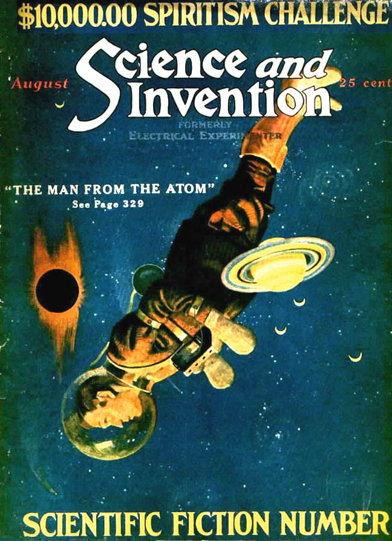

Predicting Future Inventions
*Science and Invention*, vol. 11 no. 4 , August 1923
DRAFT: Please do not share without permission of the author. Typeset versions in web | pdf | doc
EVERY inventor must be a prophet. If he were not, he could not think up inventions that will only exist in the future. For this reason, every inventor must ascend from fact to non-fact. What non-fact will turn out to be, not even the inventor knows beforehand. He prophesies to himself that he can make such and such an invention, all the while thinking about it, and letting his imagination work overtime. He keeps on turning the question or problem over and over in his mind until the subject finally crystallizes itself into a concrete form. All of this takes place in the inventor’s mind. He is not working with concrete facts but he imagines and hopes that the particular device upon which he is laboring will turn out to be as he imagines it.
If the inventor’s imaginings were wrong, he is a poor inventor. If they are right, he is a good one.
The art of inventing is to produce something that has not existed or has not been known on earth previously. Of necessity, therefore, it lies in the future. Sometimes an inventor may have a perfectly good idea of a certain machine, which he is convinced will work, if certain conditions were fulfilled. He starts working it out until he finds to his dismay that he cannot produce certain materials or certain articles which he knows are needed, but which have not as yet been developed. For instance; inventors over 150 years back, knew the automobile. Steam automobiles operated on the roads of England in the 18th century capable of running at a fair rate of speed and could carry from ten to fifteen people. Such automobiles failed because the automotive power had not as yet been developed perfectly. The missing link was the gasoline engine, which up to that time was not known. The inventor had had all this in his mind’s eye and he was prophetic enough to realize that some day such vehicles would become commonplace, as indeed they are now. Jules Verne in his prophetic books, describes dozens of future inventions, nearly all of which have become realities. Indeed, there are not more than three or four of his imaginations left, and these no doubt will become true very shortly. Consider the submarine which was prophesied in its entirety by Jules Verne long before it made its appearance. He had laid the basis for the present day submarine, and lived to see the day when the first one was actually built and had operated as he had prophesied it would.
There are a certain class of people, and we hear continually from them, who condemn the policy of this magazine because we exploit the future. These good people never realize that there can be no progress without prediction. It is impossible to have in mind an invention without planning it beforehand, and no matter how fantastic and impossible the device may appear, there is no telling when it will attain reality in the future. To illustrate: in the August, 1918 issue of the ELECTRICAL EXPERIMENTER, the writer ran a story entitled: “The Magnetic Storm.” This was during the war and was a purely fantastic idea: the suggestion was made to stop the war by burning out all electrical instruments throughout Germany. The idea was to have a tremendously large Tesla coil along the border, which would send a current into all electrical circuits through Germany, burning out armatures, automobile wiring, electric installations of airplanes, telegraph and telephone apparatus, etc. While theoretically possible, the idea was very fantastic. Cable dispatches during the middle part of June of the present year brought the news from Germany that the very thing had actually been accomplished by the powerful Nauen radio station. A number of automobiles were stopped at a distance by the energy sent out from this station.1

Then again in this magazine we have for the last ten years exploited television, the faculty of seeing at a distance. We have shown all sorts of television schemes, all of which seemed to belong to the distant future. We have on file a great many letters from critics denouncing us for printing such “foolishness,” as they call it, because they said it would ever be impossible to invent a machine, by which a man could see at a distance. During the latter part of June, Mr. Jenkins of Washington, publicly demonstrated before Army and Navy officials a machine, whereby it is possible not only to see at a distance but to project a film on a screen in New York and broadcast it all over the country by radio the same as voice and music is broadcast by radio now.
These are just a few examples among many.
And so it goes. What seems impossible and even ridiculous today becomes an actuality tomorrow. Throughout the ages, the man who looked into the future was usually considered a crank or insane. He is in the same population today. Human nature is such that it opposes changes, particularly if such changes are violent. Anything that tends to pull us out from our daily rut is not welcome, because it means an effort.
When some of our greatest scientific authorities, as late as twenty years ago, proved by mathematics that it was impossible to sustain in the air a machine such as an airplane; when the news of the X-ray was greeted with derision; when the sending of messages by radio was not believed by the populace, when it had already been used for years—it behooves the average man to be extremely cautious in denouncing any idea just because it is new and appears impossible on the face of it.
-
The Nauen station was also infamous among amateur experimenter communities for sending signals across the Atlantic to German U-Boats, relayed through a station in Sayville, New Jersey. For more on Nauen, see “Sayville,” August 1915. ↩
Grant Wythoff, editor
grant.wythoff@gmail.com

This work is licensed under a Creative Commons Attribution-NonCommercial-NoDerivatives 4.0 International License.